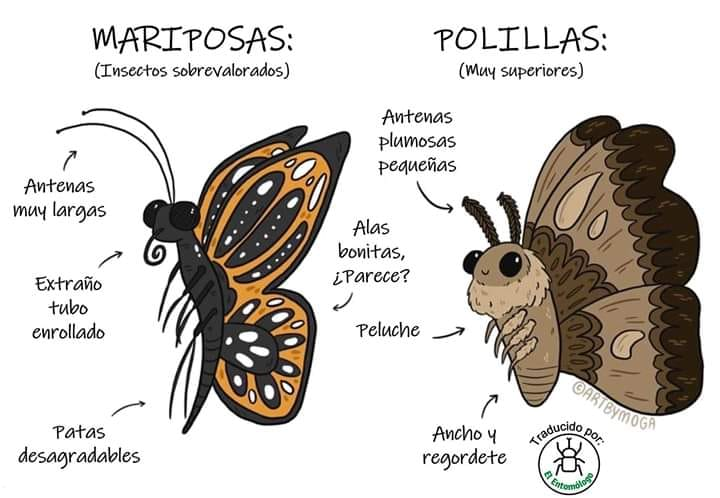

Una de las principales diferencias es su hábito. Las mariposas se encuentran activas durante el día y, por lo general, las polillas vuelan y buscan alimento durante la noche, les atrae la luz y pueden volar en línea recta hacia ella. Es importante aclarar, que no siempre es así; algunas especies de polillas se alimentan durante el día. Por ello, otras características nos ayudan a diferenciarlas con más precisión, como la posición de sus alas al descansar. Las mariposas, usualmente, reposan con las alas levantadas y hacia atrás; mientras que, las polillas descansan con las alas pegadas a su cuerpo o, extendidas como las alas de un avión. Otra diferencia muy llamativa está en sus colores. Las mariposas tienen colores vibrantes y atractivos, importantes al momento de reproducirse. Las polillas, por otro lado, son de colores opacos, con excepción de algunas especies de polillas venenosas; de esta forma, se camuflan para evitar a los depredadores nocturnos. Además, las polillas son, generalmente, peludas y gordas, mientras que las mariposas son delgadas y lisas. Las antenas también son distintas, si te fijas, las antenas de las mariposas son delgadas pero abultadas en la punta; mientras que, las antenas de las polillas son plumosas o con forma de peine. Cuando una larva de polilla se convierte en pupa (así se preparan para la adultez), desarrolla una cubierta de seda sobre esta, a diferencia de la mariposa que, forma pupas llamadas crisálidas, que son lisas y sin seda.

> Olazo, A. (2020). ¿Cuáles son las diferencias entre mariposas y polillas?. Disponible en https://www.robotitus.com/cuales-son-las-diferencias-entre-mariposas-y-polillas. (Recuperado el 13 de Noviembre de 2022).